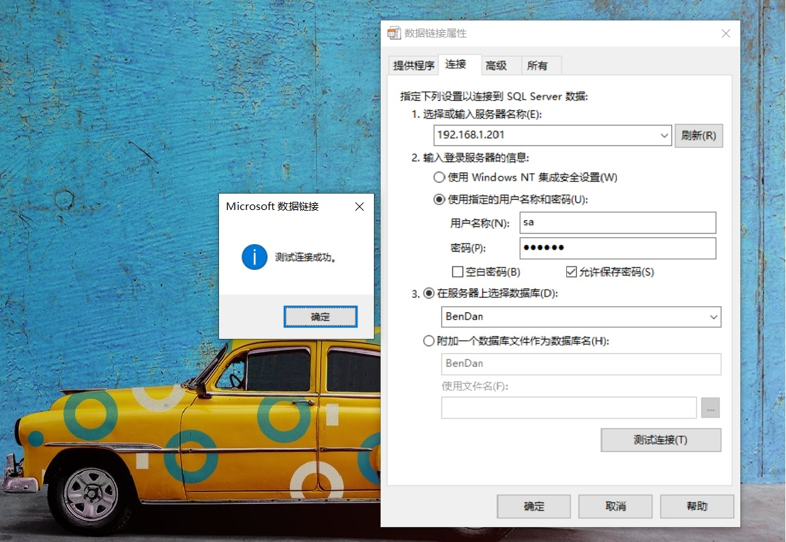

如何快速获取数据库连接字符串？并且阔以验证数据库是否能连接成功？拾壹分享一个教程，只需三步就能获取数据库连接字符串。
需求
完成以下操作需要准备的工具
- Windows操作系统（xp-10理论上都阔以）💻
- Sql Server数据库环境 🛢
第一步
新建一个 DbContext.txt文本文件。将文本文件的后缀名txt改成dul(如果系统默认没有显示文件后缀名可以进行以下操作。打开我的电脑，点击左上角查看，勾选文件扩展名选项)。
第二步
双击DbContext.dul打开文件。如下图01所示：

如上图所示依次输入,
服务器IP,登录名,密码远程数据库登录信息。这里注意一个细节。勾选允许保存密码。不勾选的话生成的字符串连接字符串里是不带用户登录密码的。点击
连接测试，提示测试连接成功。点击完成即完成数据连接。
第三步
选中 DbContext.dul文件 ，鼠标右击打开方式，查看更多应用,选择记事本打开。记事本打开后可以看到如下字符串
1 | [] |
其中
1 | Provider=SQLOLEDB.1;Password=123456;Persist Security Info=True;User ID=sa; |
即为当前 SQL Server 数据库连接字符串